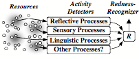

Could be
I only sang because the lonely road was long;
and now the road and I are gone
but not the song.
I only spoke the verse to pay for borrowed time:
and now the clock and I are broken
but not the rhyme.
Possibly,
the self not being fundamental,
eternity
breathes only on the incidental.
—Ernesto Galarza, 1905-1984
What makes each human being unique? No other species of animal has such diverse individuals; each person exhibits a different set of appearances and abilities. Some of those traits are inherited, and some come from each person’s experiences—but in every case, we each end up with different characteristics. We sometimes use ‘Self’ for the features and traits that distinguish each person from everyone else.
However, we also use Self in a sense that suggests that we are controlled by powerful beings inside ourselves, who want and feel and think for us, and make our important decisions for us. We call these our Selves or Identities—and see them as staying the same over time, regardless of what may happen to us. Sometimes we even envision that Self as a minuscule person inside the mind; this is sometimes called a homunculus. (A similar premise was prevalent before the dawn of modern genetics: it claimed that every sperm already contained a perfectly formed little personage.)
Figure 9- 1
Daniel Dennett (1978): “A homunculus (from Latin, 'little man') is a miniature adult held to inhabit the brain … who perceives all the inputs to the sense organs and initiates all the commands to the muscles. Any theory that posits such an internal agent risks an infinite regress … since we can ask whether there is a little man in the little man's head, responsible for his perception and action, and so on.”[1]
What attracts us to the queer idea that we can only think or feel with the help of those Selves inside our minds? Chapters 1 and 4 suggested that this concept helps to keep us from wasting time on difficult questions about our minds. For example, if you wonder how your vision works, the Single-Self view gives the answer that, ‘Your Self simply peers out though your eyes.” If you ask about how your memory works, you get the reply, “Your Self knows how to recollect whatever might be relevant.” And if you wonder what guides you through your life, it tells that your Self supplies you with all your wishes, hopes, and goals—and then solves all of your problems for you. Thus, the Single-Self view diverts you from asking about how your mental processes work. Instead, it leads you to ask questions like these:
Is an infant born with anything like what an adult would call a Self’? Some would insist on answering with, “Yes, infants are persons just like us—except that they don’t yet know so much." But others would take an opposite view: “An infant begins with almost no intellect, and developing one takes a sizeable time.”
Does your Self have a special location in space? Most ‘western’ thinkers might answer, “Yes”—and tend to locate it inside their heads, somewhere not far behind their eyes. However, I’ve heard that some other cultures situate Selves between the belly and chest.
Which of your goals and beliefs are your “genuine” ones? The Single-Self view suggests that some of your intentions and values are ‘authentic’ and ‘sincere”—whereas the models of mind discussed in this book leave more room for conflicting views.
Does your Self stay the same throughout your life? We each have a sense of remaining the same, regardless of what may happen to us. Does this mean that some part of us is more permanent than our bodies and our memories?
Does your Self survive the death of your brain? Different answers to that might leave us pleased or distressed, but would not help us to understand ourselves.
Each such question uses words like self, we, and us in a somewhat different sense—and this chapter will argue that we do this because, whenever we try to understand ourselves, we may need to use several different views of ourselves.
Whenever you think about your “Self,” you are switching among a network of models, each of which may help to answer questions about different aspects of what you are.
Here, as we said in 4-3, we’re using the word ‘model’’ to mean a mental representation that can help us to answer some questions about some other, more complex thing or idea. For example, some of our models are based on simplistic ideas like “All our actions are based on the will to survive,” or “we always like pleasure more than pain,” while some other self-models are far more complex. We develop these multiple theories because each of them helps to represent certain aspects of ourselves, but is likely to give some wrong answers about other questions about ourselves.
Citizen: Why should a person want more than one model? Would it not be better to combine them into a single, more comprehensive one?
In the past, there were many attempts to make ‘unified’ theories of psychology. However, this chapter will suggest some reasons why none of those theories worked well by itself, and why we may need to keep switching among different views of ourselves.
Jerry Fodor (1998): “If there is a community of computers living in my head, there had also better be somebody who is in charge; and, by God, it had better be Me.”
Cosma Rohilla Shalizi: “I have been reading my old poems, and they were written by somebody else. Yet I am that selfsame person; or, if I am not, who is? If no one is, when did he die—when he finished this poem, or that one, or the next day, or the end of that month?”
∞∞∞∞∞∞∞∞∞∞∞∞∞∞∞∞∞∞∞
§9-1. How do we Represent Ourselves?
“O wad some Pow'r the giftie gie us
To see oursels as ithers see us!”—Robert Burns
How do we make our models of ourselves? Let’s start by asking simpler questions about how people describe their acquaintances. Thus, whenever Charles thinks about his friend Joan, he might use descriptions that he has made of some of her characteristics. These could include his ideas about:
Joan’s motives, goals, aversions, and tastes,
The appearance of her body and face,
Some ways in which she is disposed to behave,
Her abilities in various social realms.
However, when Charles thinks about Joan in different realms, his descriptions of her may not all agree. For example, in their professional work, he might view Joan as helpful and highly competent—whereas in social settings he sees her as selfish and overrating herself. What could lead Charles to make such different models? Perhaps his first representation of Joan served well to describe her business self, but failed to make good predictions about her performance in more social realms. Then, when he tried to change that description, it made new mistakes in the contexts where it had formerly worked—and he ended up by making separate models of how Joan behaves in each of several different domains.
Physicist: Perhaps Charles should have tried harder to construct one single, unified model of Joan.
Such attempts will usually fail, because each of a person’s mental realms may need different kinds of representations. Indeed, whenever a subject becomes important to us, we tend to build multiple models for it—and this chapter will argue that this ever-increasing diversity appears to be a principal source of our human resourcefulness.
To more clearly see what leads this variety, let’s consider a simpler situation: Suppose that you find that your car won’t start. Then, to diagnosis what might be wrong, you will find that you need to switch among several different ways to think about your car:
If the key is stuck, or the brake won’t release, you must think in terms of mechanical parts.
If the starter won’t turn, or if there is no spark, you must think in terms of electrical circuits.
If you’ve run out of gas, or the air intake’s blocked, you must think about how your car consumes fuel.
It is the same in every domain; to answer different types of questions, we often need different kinds of representations. For example, if you wish to study Psychology, your teachers will make you take courses in at least a dozen subjects, such as Neuropsychology, Neuroanatomy, Personality, Perception, Physiology, Pharmacology, Social Psychology, Cognitive Psychology, Mental Health, Child Development, Learning Theories, Language and Speech, etc. Each of those subjects uses different models to describe different aspects of the human mind.
Similarly, to learn about Physics, you would need to study subjects called, Thermodynamics, Calculus, Electromagnetic Fields; Quantum Mechanics, Optics; Solid State and Fluid Mechanics, Theory of Groups, and Relativity. Each of those subjects has its own ways to describe the events that occur in the physical world.
Student: I thought that physicists seek to find a single model or “grand unified theory” to explain all phenomena in terms of some very small number of general laws.
Those ‘unified theories of physics’ are grand, indeed—but to apply them to any particular case, we usually need to use some specialized representation to deal with each particular aspect of what all the scientists of the past have discovered. Thus, whenever we deal with complex subjects like Physics or Psychology—we find ourselves forced to split such fields into ‘specialties’ that use different representations to answer different kinds of questions. Indeed, a major part of education is involved with learning when and how to switch among different representations.
Returning to Charles’ ideas about Joan, these will also include some models of Joan’s own views about herself. For example, Charles might suspect that Joan is displeased with her own appearance (because she is constantly trying to change this) and he also makes models of how Joan might think about herself in realms like these.
Joan’s ideas about her own ideals,
Her ideas about her abilities,
Her beliefs about her own ambitions,
Her views about how she behaves,
How she envisions her social roles.
Joan would probably disagree with some of Charles’ views about her, but this may not make him change his opinion, because he knows that the models that people make of their friends are frequently better than the models that people make of themselves.
"Others often better express myself.”—Kevin Solvay [2]
Greg Egan (1998): “... But even as these ordinary thoughts and perceptions flowed unimpeded, a new kind of question seemed to spin through the black space behind them all. Who is thinking this? Who is seeing these stars, and citizens? Who is wondering about these thoughts, and these sights? And the reply came back, not just in words, but in the answering hum of the one symbol among the thousands that reached out to claim all the rest: Not to mirror every thought, but to bind them. To hold them together, like skin. Who is thinking this? I am.”
We’ve discussed a few models that Charles might use when he thinks about his friend, Joan. But what kinds of models might people use when they try to think about themselves? Perhaps our most common self-model begins (see 4-5) by representing a person as having two parts—namely, a 'body' and a 'mind'.
Figure 9- 2
That body-mind division soon grows into a structure that describes more of one’s physical features and parts. Similarly, that model of mind will divide into a host of parts that try to depict one’s various mental abilities.
Figure 9- 3
Each model that one makes of oneself will only serve well in certain situations, so one ends up with different self-portraits in realms in which one has different abilities, values, goals, and social roles. So when we think about ourselves, we’ll usually need to keep switching among those multiple representations of ourselves.
Figure 9- 4
If you tried to represent all those perspectives at once, your model would soon become too complex to use; in each of those realms we portray ourselves with somewhat different autobiographies, each based on using different aims, ideals, and interpretations of the same ideas and events. Nevertheless, as Daniel Dennett suggests, we are rarely inclined to recognize this, so each of us constructs a myth of having—or being—a Single Self
Daniel Dennett 1992b: "... we are all virtuoso novelists, who find ourselves engaged in all sorts of behaviour, and we always try to put the best "faces" on if we can. We try to make all of our material cohere into a single good story. And that story is our autobiography. The chief fictional character at the centre of that autobiography is one's self."
"For there is not a single human being ... who is so conveniently simple that his being can be explained as the sum of two or three principal elements... Harry consists of a hundred or a thousand selves [but] it appears to be an inborn and imperative need of all men to regard the self as a unit. … Even the best of us shares the delusion. " —Herman Hesse, in Steppenwolf.
When Joan is with a group of her friends, she regards herself as fairly sociable. But when surrounded by strangers, she sees herself as anxious, reclusive, and insecure. For as we said in 4-8, each person makes new self-models to use in each of many contexts and realms:
Joan’s mind abounds with varied self-models—Joans past, Joans present and future Joans; some represent remnants of previous Joans, while others describe what she hopes to become; there are sexual Joans and social Joans, athletic and mathematical Joans, musical and political Joans, and various kinds of professional Joans.
Whenever these ‘sub-personalities’ are actively playing their different roles, each of them may have some control over different sets of goals and skills —so that each has a somewhat different way to think. However, they will all need common access to many of the person’s resources and bodies of commonsense knowledge, so those sub-personalities will frequently need to compete for control of some higher-level processes.
For example, suppose that Joan is working at her professional job—but suddenly some social part of her mind reminds her of a time when she was trapped in an awkward relationship. She tries to shake off those memories, only to find herself thinking in childish ways about how her parents would view her behavior—or she might find that she is regarding herself as a partner in a business, or as a person who likes to do research, a member of a family, a person involved in a love affair, or as a person who has a pain in her knee.
In the course of such trains of everyday thinking, we frequently switch between self-models, whose various outlooks may not be consistent, because we use them for different purposes. This means that when one needs to make a decision, the result will partly depend upon which of one’s sub-personalities are active then. A Business Self might be inclined to choose the option that seems more profitable; an Ethical Self might want to select the option that suits her ideals ‘best’; a Social Self might want to select the one that would most please her friends. For example, when we identify ourselves as members of a social group, then we can share its triumphs and failures with exuberance or remorse, and thus exhibit concern, compassion, and empathy—whereas, when one is involved with a business, one may feel obliged to try to suppress such sentiments. Thus, as we said in Chapter 1, each major change in emotional state may display a different sub-personality:
When a person you know has fallen in love, it's almost as though someone new has emerged—a person who thinks in other ways, with altered goals and purposes. It's almost as though a switch had been thrown, and a different program has started to run.
Whenever we switch among sub-personalities, we are likely to change our Ways to Think—but because the context remains the same, we will still maintain some of the same of priorities, goals, and inhibitions, as well as some contents of short-term memories, and of our currently active Mental Critics.
However, some such changes may be larger, and we often hear sensational stories about persons who switch between totally different personalities. However, while such extremes are exceedingly rare, everyone undergoes changes of mood in which one exhibits somewhat different sets of intentions, behaviors and traits. Then, whether those shifts are persistent or brief, the sub-personality that is now in control may activate a set of views and goals for you, which, for the moment, you may believe to be the views and goals of the ‘genuine’ You.
Augustine, Bishop of Hippo: “Of what nature am I? A life various, manifold, and vast. Behold in the numberless halls and caves, in the countless fields and dens and caverns of my memory, full without measure of numberless kinds of things— present there either through images as all bodies are; or present in the things themselves as are our thoughts; or by some notion or observation as our emotions are, which the memory retains though the mind feels them no longer...”
It often makes sense to think of your Self as a stable, unchanging entity. But to what extent are you the same as you were ten minutes ago? Or are you like the proverbial knife that has had both its handle and blade replaced? You are certainly not like the text of a bound, printed book; your ‘contents’ keep changing moment to moment. Nevertheless, enough of your knowledge remains the same—and different enough from anyone else’s—that one can argue that our ‘identities’ are mainly what’s in our memories.
“A man is often willing to say that this is the same person who did something in the past, not on the basis of knowing that it is the same body but on a quite different basis—that the person recounts the past situation with great accuracy, exhibits similar personal reactions, and displays the same skills.”—Encyclopedia Britannica:
However, that sense of identity can fade when we change our ways to interpret our older memories.
William James 1890:“[When the continuity is no longer felt,] the sense of personal identity goes too. We hear from our parents various anecdotes about our infant years, but we do not appropriate them as we do our own memories. Those breaches of decorum awaken no blush, those bright sayings no self-complacency. That child is a foreign creature with which our present self is no more identified in feeling than it is with some stranger's living child today. Why? Partly because great time-gaps break up all these early years - we cannot ascend to them by continuous memories; and partly because no representation of how the child felt comes up with the stories. ... It is the same with certain of our dimly recollected experiences. We hardly know whether to appropriate them or to disown them as fancies, or things read or heard and not lived through. ... The feelings that accompanied them are so lacking in the recall, that no judgment of identity can be decisively cast.”
A century later, another description of what we might mean when we talk of our Selves:
Daniel Dennett 1991: Our fundamental tactic of self-protection, self-control, and self-definition is not building dams or spinning webs, but telling stories—and more particularly concocting and controlling the story we tell others—and ourselves—about who we are. … And finally, we, (unlike professional human storytellers) do not consciously and deliberately figure out what narratives to tell and how to tell them; like spider webs, our tales are spun by us; our human consciousness, and our narrative selfhood, is their product, not their source. … These strings or streams of narrative issue forth as if from a single source—not just in the obvious physical sense of flowing from just one mouth, or one pencil or pen, but in a more subtle sense: their effect on any audience or readers is to encourage them to (try to) posit a unified agent whose words they are, about whom they are: in short, to posit what I call a’ center of narrative gravity’. ... As such, it plays a singularly important role in the ongoing cognitive economy of that living body, because, of all the things in the environment an active body must make mental models of, none is more crucial than the model the agent has of itself.
Then, what could you mean when you say you’re the same? Of course, that depends on how you’re describing yourself—so, instead of asking about your Identity, perhaps you should ask, “which of your models of yourself best serves your present purposes.” In any case, we should ask ourselves what compels us to think of ourselves as selves—and here is a simplistic theory of this: Whatever happens, we're prone to ask ourselves who or what was responsible—because our representations force us to fill the “caused-by” slots that we mentioned in 8-7. This leads us to find explanations that frequently help us to predict and control not only what happens in the world, but also what happens in our minds.
However, when you fail to find a plausible cause, that slot-filling hunger may lead you to imagine a cause that doesn’t exist—such as the ‘I’ in “I just got a good idea.” For if your frame-default machinery compels you to find some single cause for everything that you ever do—then, that entity needs a name. You call it ‘me.’ I call it ‘you.’
∞∞∞∞∞∞∞∞∞∞∞∞∞∞∞∞∞∞∞
Alfred Korzybski 1933: "Whatever you say something is, it is not."
If you asked Joan to describe herself, she might say something like this:
Joan: “I think of myself as disciplined, honest, and idealistic. But because I am awkward at being sociable, I try to compensate by trying to be attentive and friendly, and when that fails, by being attractive.”
Similarly, if you were to ask Charles to describe his friend Joan, he might declare that she is helpful, tidy, and competent, but somewhat lacking in self-confidence. Such descriptions are filled with everyday words that name what we call “character traits” or “characteristics”—such as disciplined, honest, attentive, and friendly. But what could make it possible for someone to describe a person at all? Why should minds so complex as ours show any clear-cut characteristics? Why, for example, should anyone tend to be usually neat or usually sloppy—rather than tidy about some things but not about others? Why should personal traits exist at all? Here are some possible causes for the appearance of such uniformities:
Inborn Characteristics. One reason why individuals exhibit different traits is that each person is born with different genes that lead to having somewhat different resources and ways these are interconnected.
Learned Characteristics. Each person also comes to learn individual conditions and priorities that influence when various resources can be engaged—as when to become angry or afraid—so that some individuals may tend more than others to become belligerent or diffident.
Investment Principle: Once we learn an effective way to do some job, we’ll resist learning other ways to do it— because new methods are usually harder to use until we become proficient at them. So as our older procedures gain strength, it gets harder for new ones to compete with them.
Archetypes and Self-Ideals: Every culture comes with myths that describe the fates of beings that are endowed with larger-than-life traits. Few of us can prevent ourselves from becoming attached to those heroes and villains—and this makes us likely to try change ourselves, to make those imagined traits become real.
Self-Control: It is hard to achieve any difficult goal—or to carry out any long-range plan—unless you can make yourself persist at it. The following section will suggest that, to keep ourselves from constantly changing our goals and other priorities, our cultures teach us to train ourselves to become more ‘self-predictable,’ by constraining the ways in which we behave.
In any case, although our trait-based descriptions are frequently wrong and always incomplete, they help to make things seem simpler and more understandable. Thus, it is easy to say that a person is honest and tidy—as opposed to being deceitful and sloppy—no matter that no person always tells the truth, or keeps everything perfectly neat. It saves a great deal of effort and time to see people or things as stereotypes.
However, the concept of traits can be treacherous because, even when we suspect that those assumptions are wrong, they still continue to influence us. Here is a common example of this: suppose that some stranger you’ve never met were to take your hand, look into your eyes, and then report this impression of you:
“Some of your aspirations tend to be unrealistic. At times you are extroverted, affable, sociable, while at other times you are introverted, wary and reserved. You have found it unwise to be too candid in revealing yourself to others. You are an independent thinker and do not accept others' opinions without good evidence. You prefer a certain amount of change and variety, and become dissatisfied when hemmed in by restrictions and limitations.
“At times you have serious doubts as to whether you made the right decision or did the right thing. Disciplined and controlled on the outside, you tend to be anxious and insecure inside. Your sexual adjustment has presented some problems for you. You have a great deal of unused capacity, which you have not turned to your advantage. You have a tendency to be critical of yourself, but have a strong need for other people to like and to admire you.” [3]
Many people are amazed that a stranger could see so deeply inside of them—yet every one of those statements applies, to some extent, to just about everyone! Just look at the adjectives in that horoscope: affable, anxious, controlled, disciplined, extroverted, frank, independent, insecure, introverted, proud, reserved, self-critical, self-revealing, sociable, unrealistic, wary. Everyone has concerns with regard to each of those characteristics, so few of us can help but feel that each such prediction applies to us.
Thus, millions of people have been entranced by the prophecies of so-called psychics, fortune-tellers, and astrologers—even when their forecasts turn out no better than random chance would predict? (See Carlson1985.) One reason could be that we trust those “seers” more than we trust ourselves, because they appear to be ‘reliable authorities.’ Another possible cause could be that we tend to believe that we are already like what we wish to be—and fortune-tellers excel at guessing what most people most want to hear. However, those prediction also may often ring true simply because we each maintain so many self-models that almost any statement about ourselves will agree with at least some of those models.
It is hard to achieve any difficult goals unless, at least to some extent, you can make yourself persist at them. You would never complete any long-range plans if, whatever you tried, you kept “changing your mind.” However, you cannot simply ‘decide’ to persist, because many kinds of events may later affect your goals and priorities. Consequently, we each must develop ways to impose less breakable self-constraints on ourselves.
For example, if you should ever need help from your friends, they will need to know what to expect from you—and to know when they can depend on you—and therefore, at least to some extent, you must make yourself predictable. Furthermore, it is important for you to be able to ‘depend on yourself’ to carry out at least some of your many plans, so again you need ways to restrict yourself. Our cultures help us to acquire such skills by teaching us to admire various traits of consistency, commitment, and ambitiousness. Then if you come to admire those traits, you may make it your goal to train yourself to behave in those ways.
Citizen: Might not such restrictions cause you to pay the price of losing your spontaneity and creativity?
Artist: Creativity does not result from lack of constraints, but comes from discovering appropriate ones. Our best new ideas are the ones that lie just beyond the borders of realms that we wish to extend. An expression like “skdugbewlrkj” may be totally new, but would have no value unless it connects with other things that you already know.
In any case, it is always hard to make yourself do things that do not interest you—because, unless you have enough self-control, the Rest of Your Mind will find more attractive alternatives. Section 4-7 showed how we sometimes control ourselves by offering bribes or threats to ourselves in the forms of self-incentives like, “ I’ll be ashamed of myself if I give in to this,” or " I’ll be proud if I can accomplish this.” To do this, you need some knowledge about which of those methods will work on yourself—but generally, it seems to me, the tricks that we use for self-control are much like those that we use to influence our acquaintances— e.g., by exploiting their various needs and fears.
Also, we often control ourselves by exploiting things in the physical world. To stave off Sleep, you can pinch yourself, or take a deep breath—or ingest the right amount of some stimulant. Or, you can move to a more exciting place, or indulge in strenuous exercise. All those activities can keep you awake by exploiting your environment. Another trick that you can use is to try to change your emotional state by assuming various facial expressions: these seem peculiarly effective because they are likely to affect you as much as they do your audience.
But why must you use such devious tricks to select and control your ways to think—instead of just choosing to do what you want to do? As we said at the end of Chapter 3, directness would be too dangerous. You would probably die if one part of your mind could take over control of all the rest, and our species would soon become extinct if we could ignore the demands of hunger, pain, or sex. Accordingly, our systems evolved so that in emergencies, our instincts could dislodge our fantasies.
Furthermore, every culture develops ways to help its members constrain themselves. For example, every game that our children play helps to train them to assume new roles and to swiftly switch among those mental states, while still obeying the rules of that game. In effect, each such game is a virtual world that we use for training ourselves to behave in certain specified ways.
Self-Control is no simple skill, and many of us spend much of our lives seeking ways to make our minds ‘behave.’ This suggests yet another meaning for Self; perhaps we sometimes use it as a suitcase-name for all the methods we use when we try to control ourselves.
There
are two rules for success in life.
First, never tell anyone all that you know. —Anonymous.
Why do we find it so easy to say that a person is reclusive and shy, as opposed to being sociable—or that someone tends to be placid and calm, instead of impulsive and excitable? More generally, why do we find it so easy to make such two-part distinctions for other aspects of our personalities—as when we group our tempers, emotions, moods and traits into pairs that we regard as opposites?
Figure 9- 5
Solitary vs. Sociable
Dominant vs. Submissive
Tranquil vs. Agitated Careless vs. Meticulous
Forthright vs. Devious Cheerful vs. Cranky.
Audacious vs. Cowardly
Joyous vs. Sorrowful
We see similar ‘dumb-bell’ thinking at work when people try to describe things in terms of opposing pairs of forces, spirits, or principles. Of course, all those distinctions are flawed; Sorrow is not the mere absence of Joy, nor is Agitation the absence of Tranquility. Nevertheless, we’re all prone to divide many aspects of our minds into pairs with seemingly opposite qualities. A notable example of this is the popular myth that each person has two basic ways to think—that are embodied in opposite sides of the brain. In earlier times, those two halves of the brain were thought to be almost identical. But in the mid-20th century, when surgeons could cut the connections between those halves, some significant differences were observed—and this revived many views of the mind as a place for conflicts between these pairs of antagonists:
Left vs. Right
Quantitative vs. Qualitative
Thought vs. Feeling Deliberate vs. Spontaneous
Rational vs. Intuitive Literal vs. Metaphorical
Logical vs. Analogical Reductionist vs. Holistic
Intellectual vs. Emotional Scientific vs. Artistic
Conscious vs. Unconscious
Serial vs. Parallel
But how could so many such distinctions be embodied in the same two halves of the very same brain? The answer is that this is largely a myth, because each of those mental activities involves the use of machinery located in both of those halves of the brain. However, there also is truth to that myth; our brains begin as highly symmetrical but then, one side develops more machinery for language-based activities, while the other side develops more visual and spatial abilities. However, I suspect this these differences might partly result from some process in which the so-called ‘dominant’ side develops more reflective thinking, whereas the other side remains more reactive and less deliberative. See Battro 2000.
Accordingly, I am inclined to conjecture that these differences might result from a process in which one side of the brain comes to develop substantially better “management skills.” Of course, this could happen on both sides at once—but many conflicts would soon arise if one had to obey two masters at once. However, as soon as one side begins to excel at suppressing impulses that come from the other side, that first one could soon become ‘dominant,’ while the other one might slow down in developing abilities to produce and pursue higher-level plans and goals. The result would be that the non-dominant side would appear to be more childish and less mature because of having fewer administrative skills. It might need only a small genetic bias to determine which side of the brain eventually wins the prize of having more influence at the top.
Here are some other possible reasons why people like two-part distinctions so much:
Many things seem to come in opposing pairs. Generally, it is difficult for us to distinguish what something ‘is’ without contrasting it with what it is not, and this makes us tend to see things in terms of their possible opposites. For example, it often makes sense to classify physical objects as large or small, or as heavy or light, or as cold or hot.
However, a young child might tell you that the opposite of water is milk, or the opposite of a spoon is a fork—but later, that very same child may also insist that the opposite of fork is knife. Thus opposites depend on the contexts they’re in, and so may overrule consistency.
Intensities and Magnitudes. Although it is hard to describe what feelings are, it seems easy to say how intense they are. This makes it seem quite natural to apply such adjectives as slightly, largely, or extremely’ to almost every emotion word—such as sorry, pleasant, happy, or sad.
We often justify a choice by declaring that we like a certain option more or less than another one—as though those options were like points on a line. However, that kind of one-dimensional comparison can lead us into supposing that both options are almost the same—except for having ‘plus’ or ‘minus’ signs! Thus representing feelings in terms of intensities can simplify how we make our decisions, by encouraging us to overlook other kinds of distinctions, in cases where we should use more thoughtful ways to deal with complicated conflicts.[4]
Structural vs. Functional descriptions. Many of our distinctions are based on ways to make connections between what we learn about things and what we learn about using those things. Accordingly, it is often convenient to classify the parts of an object as playing ‘principal’ vs. ‘supporting’ roles—just as we did for ‘a chair’ in section 8-3, where we identify the seat and back as its essential parts, and its legs and parts as merely serving to sustain them. [5]
Figure 9- 6
Certainly, two-part distinctions can be useful when we need to choose between alternatives—but when that fails, we may have to resort to more complex distinctions. For example, when Carol is trying to build that Arch, it will sometimes suffice for her to first describe each block as being short or tall, or narrow or wide, or thin or thick; then she may only need to decide which of those distinctions is relevant. However, on other occasions, Carol may need to find a block that satisfies some more elaborate combination of constraints that relate its height, width and depth; then she can no longer describe that block in terms of only a single dimension.
Figure 9- 7
Inborn Brain-Machinery. Another reason why we tend to think in terms of pairs could be that our brains are innately equipped with special ways to detect differences between pairs of mental representations. Thus in 6-4 we mentioned that when you touch something very hot or cold, the sensation is intense at first, but then will rapidly fade away—because our external senses mainly react to how things change in time. (This also applies to our visual sensors, but we're normally unaware of this because our eyes are almost always in motion.) If this also applies to sensors inside a brain, this would make it easy to compare a pair of descriptions, simply by alternately presenting them. However, this ‘temporal blinking’ scheme would work less well for describing the relationships of more than two things—and that could be one reason why we are less proficient at making three-way comparisons. [6]
When is it appropriate to distinguish between only two alternatives? We often speak as though it is enough to classify a new thing or event in ‘yes or no’ terms like these:
Was this a failure or a success?
Should we see it as usual or exceptional?
Should we forget it or remember it?
Is it a cause for pleasure or for distress?
Such two-part distinctions can be useful when we have only two options to choose among. However, selecting what to remember or do will usually depend on making more complex decisions like these:
How should we describe this event?
What links should we connect it with?
Which other things is it similar to?
What other uses could we make of it?
Which of our friends should we tell about it?
More generally, it usually makes little sense to commit ourselves, for all future times, about which objects to like or dislike—or about which persons, places, goals, or beliefs we should seek or avoid, or accept or reject—because all such decisions should depend on the contexts that that we find ourselves in. Accordingly, it seems to me that there is something wrong with most dumbbell distinctions: those divisions appear to be so simple and clear that they seem to be all that you need—and that satisfaction tempts you to stop. Yet most of the novel ideas in this book came from finding that two parts are rarely enough—and eventually my rule became: when thinking about psychology, one should never start with less than three hypotheses!
One reason why we are so often satisfied with dividing things into only two kinds could be that a typical child’s environment contains so few significant ‘triplets’ of things. A two-year-old has only two feet, and is taught by a pair of parents to learn to put on a pair of shoes—and soon, that typical two-year-old will learn to understand and to use word two. But it frequently takes another full year for a child to learn to use the word three—perhaps because our environments contain so few instances of “three-nesses.” We all excel at contrasting pairs of things, and making lists of their differences—but our cultures and languages do not provide us with good ways to discuss relationships among triplets of things. Why don’t we have words for trichotomies or trifferences?
∞∞∞∞∞∞∞∞∞∞∞∞∞∞∞∞∞∞∞
Brian: You are all individuals!
Mob: We are all individuals!
Lone voice: I'm not. —Monty Python: The Life of Brian
Most of the time we think of ourselves as having definite identities.
Introspectionist: I do not feel like a scattered cloud of separate parts and processes. Instead, I sense that there’s some sort of Presence in me—an Identity, Spirit, or Feeling of Being—that governs and guides all the rest of me.
Other times we find ourselves feeling less decisive or less centralized.
Citizen: One part of me wants this, while another part of me wants that. I need to get more control of myself.
One philosopher claimed never to feel any sense of unity.
Josiah Royce 1908: "I can never find out what my will is by merely brooding over my natural desires, or by following my momentary caprices. For by nature I am a sort of meeting place of countless streams of ancestral tendency. … I am a collection of impulses. There is no one desire that is always present to me."
In any case, even when we feel that we’re in control, we recognize conflicts among our goals, and compulsions that we can’t overcome. Then we may argue inside our minds, trying to find a compromise—but even when we feel unified, others may see us as disorganized.
We solve easy problems in routine ways, scarcely thinking about how we accomplish these—but when our usual methods don’t work, we start to ‘reflect’ on what went wrong and find ourselves to be switching around in a network of ‘models,’ each of which purports to represent some facet or aspect of ourselves, so that we end up representing ourselves with a loosely connected collection of images, models, and anecdotes.
Still, if this how one represents one’s Self, there is nothing special about this —because that’s how we represent everything else. Thus when you think about a telephone, you keep switching among different views of its appearance, its physical structure, and the feelings you have when you use it, etc., as though exploring the facets of a Panalogy. It’s the same when you think about your Self; you are using the same techniques that you use to think about everyday things; parts of your mind keep changing the ways they engage a variety of models and processes. But if so, then what impels us to believe that that we must be anything more than Josiah Royce’s meetings of streams? What leads us to the strange idea that our thoughts cannot just proceed by themselves, but need yet something else to control themselves?
Fodor 1998: “If there is a community of computers living in my head, there had also better be somebody who is in charge; and, by God, it had better be Me.”
Citizen: Even if no central Self exists, you’d have to explain why we feel that one’s there. When I think my thoughts and imagine things, must not there be someone who’s doing those things!
After all, if we had those Single Selves to want and feel and think for us, then we would not have much need for Minds—and if our Minds could do those things by themselves, then of what use would those Selves be to us? Aha! Perhaps that is precisely the point: we use words like ‘Me’ and ‘I’ to keep us from thinking about what we are! For they all give the very same answer, “Myself,” to every such question that we might ask. Here are some other ways in which that Single-Self concept is useful to us:
A Localized Body. You cannot walk through solid walls, or stay aloft without support. Where any part of your body goes, the rest of you must also go—and the Single-Self model includes the idea of being in only one place at a time.
A Private Mind. It is pleasant to think of your Self as being like a strong, closed box, so that no one else can share your thoughts to learn the secrets you want to keep—for only you hold the keys to those locks.
Explaining our Minds. Perhaps it seems to make sense to say things like, ‘I perceive the things that I see,’ because we know so very little about how our perceptions actually work. This way, that Single-Self view can help to keep us from wasting time on questions we don’t know answers to.
Moral Responsibility. Each culture needs behavioral codes. For example, because our resources are limited, we sometimes have to censure Greed. Because we each depend on others, we have to chastise Treachery. And to justify our laws and decrees, we have to assume that some Single Self is ‘responsible’ for every willful, intentional deed.
Centralized Economy. We’d never accomplish anything if we kept asking questions like, “Have I considered every alternative?” We prevent this with Critics that interrupt us with, “That’s enough thinking; I’ve made my decision!”
Causal Attribution. When we represent any thing or event, we like to attribute some Cause to it. So when we don’t know what led to some thought, we assume that the Self was the cause of it. This way, we may sometimes may use the word ‘Self’ the way we say ‘it’ in “it started to rain,” because we don’t know a more plausible cause.
Attention and Focus. We often think of our mental events as occurring in a single ‘stream of consciousness’—as though they all were emerging from some single, central kind of source, which can only attend to one thing at a time.
Social Relations. Other people expect us to think of them as Single Selves, so that unless we adopt a similar view, it will be hard to communicate with them.
These all are good reasons why the Single-Self view is convenient to use in our everyday lives. But if you want to understand how your thinking works, no simple model could portray enough details of how our minds work. Nor would it help for you to have some way to observe your entire mind simultaneously, because then you would be overwhelmed by seeing too many unwanted details. So, eventually, you will need to switch among simplified models of yourself.
Why must our models be simplifications? Each model must help us to focus on only those features of things that might be significant in some particular context; that’s what makes a map more useful to us than seeing the entire landscape that it depicts. Of course, a good map or model may also include additional knowledge, as when the blueprint of a house shows the dimensions its parts were intended to have, as well as the name of its architect.
The same applies to what we store in our minds. Consider how messy our minds would become if we filled them up with descriptions of things whose details had too little significance. So instead, we spend large parts of our lives at trying to tidy up our minds—selecting the portions we want to keep, suppressing others we’d like to forget, and refining the ones we’re dissatisfied with. [7]
∞∞∞∞∞∞∞∞∞∞∞∞∞∞∞∞∞∞∞
We may lay it down that Pleasure is a movement by which the soul as a whole is consciously brought into its normal state of being; and that Pain is the opposite. If this is what pleasure is, it is clear that the pleasant is what tends to produce this condition, while that which tends to destroy it, or to cause the soul to be brought into the opposite state, is painful. —Aristotle, Rhetoric, I, 10.
We tend to feel pleased—or at least, relieved—when we accomplish something we want. Thus, as we remarked in chapter 2,
“When Carol recognized that her goal was achieved, she felt satisfaction, fulfillment and pleasure—and those feelings then helped her to learn and remember.”
Of course, we’re delighted that Carol felt pleased—but how did those feelings help her to learn—and why do we like those feelings so much, and work so hard to find ways to attain them? Indeed, what does it mean to say that someone feels “pleased?” When people answer questions like these, we frequently hear examples of circular reasoning:
Citizen: I do the things that I like to do because I get pleasure from doing them. And naturally, I find them pleasant because those are the things that I like to do.”
One reason why we get into such circles is that we usually cannot describe any feeling itself, but can only resort to analogies like, “That pain was as piercing as a knife.” What could make something so hard to describe that we can only refer to comparisons? Clearly, this is likely to happen when we don’t have a way to divide that thing—be it an object, a process, or a mental state—into several parts, or layers, or phases. This is because a thing that we cannot split into parts gives us nothing to use as pieces of explanation! However, this goes against the popular view that such feelings as pleasure or pain are “basic” or “elemental” in the sense that they can’t be explained in terms of other things. Here is a parody of that idea:
Product Promoter: Happiness is the ultimate goal of all human beings, and all of us constantly aim toward this, whether through leisure, career, wealth, relationships or whatever. Our secure online ordering system offers a line of carefully chosen products to help you replace discomfort with pleasure.
However, this section will argue that what we call pleasure is a suitcase-name for quite a few different processes that involve activities that we don’t often recognize. This is important because, it seems to me, the assumption that pleasure is simple or ‘elemental’ has been an obstacle to understanding our psychology. So let’s try to catalog some of the feelings and activities that make the concept of “pleasure” more complex than it might first seem.
Satisfaction. A species of pleasure called ‘satisfaction’ comes when an ambition has been achieved.
Exploration. We may also feel pleasure during a quest—and not only at the end of it. So it is not only a matter of being rewarded for achieving a goal.
Joy and Bliss. You may also regard your condition as pleasant, although none of your problems have been solved—if some other process suppresses them.
Relief. A species of pleasure called “relief “may come when a problem has been solved—if that goal was represented as an irritation or agitation.
Critic-Suppression. “I know this could be bad for me, but I like it so much that I’ll do it anyway.”
Credit Assignment and Learning. Perhaps the most important aspects of pleasure are its connections with learning and memory.
Success can also fill you with pleasure and pride—and may also motivate you to show other persons what you have done. But the pleasure of success soon fades because, no sooner is one problem put to rest, another one quickly replaces it. Besides, few of our problems stand by themselves, but are only parts of larger ones.
Also, after you’ve solved a difficult problem, you may feel relieved and satisfied, and sometimes may also feel a need to arrange for some sort of inner or outer celebration. Why might we have such rituals? Perhaps there’s a special kind of relief that comes when one can dismiss a goal and release of resources that it engaged—along with the stresses that came with them. Clearing out one's mental house may help to make other things easier—just as the ‘closure’ of a funeral can help to assuage a person’s grief.
But what if the problem you’re facing persists? You can sometimes regard your present distress as a benefit, as in "I’m certainly learning a lot from this,” or “Others may learn from my mistakes." And everyone knows this magical trick for turning all failures into success: one can always tell oneself “The true reward is the journey itself.”
So instead of trying to say what Pleasure is, we’ll need to develop more ideas about what processes might be involved in what we often describe in simple terms—such as “feeling good.” In particular, it seems to me that we often use words like pleasure and satisfaction to refer to an extensive network of processes that we do not yet understand—and when anything seems so complex that we can’t grasp it all at once, then we tend to treat it as though it were single and indivisible.
Pleasures are ever in our hands or eyes,
And when in act they cease, in prospect, rise:
Present to grasp, and future still to find,
The whole employ of body and of mind. —Alexander Pope, in Essay on Man
“Pleasure pursues objects that are beautiful, melodious, fragrant, savory, soft. But curiosity, seeking new experiences, will even seek out the contrary of these, not to experience the discomfort that may come with them, but from a passion for experimenting and knowledge.” —St. Augustine, in Confessions, 35.55.
Understanding a new and difficult subject—or exploring an unfamiliar terrain—can lead to a lot of pain and stress. Then how can we keep this from holding us back from learning new ways to accomplish things? One antidote for this is Adventurousness.
“Why do children enjoy the rides in amusement parks, knowing that they will be scared, even sick? Why do explorers endure discomfort and pain—knowing that their very purpose will disperse once they arrive? And what makes people work for years at jobs they hate, so that someday they will be able to—they seem to have forgotten what! It is the same for solving difficult problems, or climbing freezing mountain peaks, or playing pipe organs with one's feet: some parts of the mind find these horrible, while other parts enjoy forcing those first parts to work for them.” —Chapter 9 of The Society of Mind
Most of our everyday learning involves only minor adjustments to skills that we already know how to use. One can do this by using ‘trial and error; one makes a small change, and if that results in a pleasant reward (such as being pleased with an improved performance) then that change will become more permanent. This fact has led many teachers to recommend that ‘learning environments’ should mainly consist of situations in which pupils get frequent rewards for success. To promote this, then, it is often suggested that one should help the students to progress through a sequence of small, easy steps.
E. L. Thorndike 1911: The Law of Effect is that: Of several responses made to the same situation, those which are accompanied or closely followed by satisfaction to the animal will, other things being equal, be more firmly connected with the situation, so that, when it recurs, they will be more likely to recur; those which are accompanied or closely followed by discomfort to the animal will, other things being equal, have their connections with that situation weakened, so that, when it recurs, they will be less likely to occur. The greater the satisfaction or discomfort, the greater the strengthening or weakening of the bond.
However, this pleasant and positive strategy may not work well in unfamiliar realms because when we are learning a new technique, we need to work harder with fewer rewards, while enduring the additional stress of being confused and disoriented. Also, it may require us to abandon older techniques and representations that have previously served us well—which might even arouse a sense of loss that brings “negative” feelings akin to grief. Such periods of awkwardness and ineptitude would usually cause a person to quit.
Thus "pleasant" or “positive” practice, alone, may not suffice for us to learn more radically different ways to think. This, in turn suggests that to become proficient at learning new things, a person must somehow acquire what Augustine called, in the extract above, ‘a passion for experimenting and knowledge.’ Such persons must somehow have managed to train themselves to actually enjoy those discomforts.
Citizen: How can you speak of ‘enjoying’ discomfort? Isn’t that a self-contradiction?
It is only a contradiction when you regard your Self as a single Thing. But when you see the mind as a cloud of conflicting resources, then you no longer need to think of pleasure as a ‘basic’ or all-or-none thing. For now you can imagine that, while some parts of your mind are uncomfortable, other parts of your mind may enjoy forcing those first parts to work for them. For example, one part of your mind can still represent your state in a positive way by saying "Good, this is a chance to experience awkwardness and to discover new kinds of mistakes!''
Citizen: But wouldn’t you still be feeling that pain?
Indeed, when struggling at their seemingly punishing tasks, athletes still feel physical pain, and artists and scientists feel mental pains—but, somehow, they seem to have trained themselves to keep those pains from spiraling into the awful cascades we call ‘suffering.’ But how could those persons have learned to suppress, ignore, or enjoy those pains, while preventing those disruption cascades? To answer that, we would need to know more about our mental machinery.
Scientist: Perhaps this does not really need any special explanation, because explorations can provide their own rewards. For me, few things bring more pleasure than making radical new hypotheses—and then showing that their predictions are correct, despite the objections of my competitors.
Artist: It seems almost the same to me, because nothing can surpass the thrill of conceiving a new kind of representation and then confirming that this will produce new effects in my audience.
Psychologist: It seems clear that many such achievers regard their ability to function in spite of pain, rejection, or adversity to be among their outstanding accomplishments!
In any case, all this suggests that ‘exploration pleasure’ (however it works) may be indispensable to those who want to keep on extending their abilities. To be sure, we usually see Pleasure as positive, but one can see it as negative—because of how it tends to suppress other competing activities. More generally, to accomplish any major goal, one may need to suppress most competing goals, as in, “I don’t feel like doing anything else.” Most traditional theories of learning assumed that an action that led to pleasure would be reinforced, so that you’ll be more likely to react that way in the future. However, I suspect that pleasure may also help us learn by engaging another, more ‘negative” function that works to keep our minds from ‘changing the subject’ while credit-assignment is being accomplished!
∞∞∞∞∞∞∞∞∞∞∞∞∞∞∞∞∞∞∞
A color stands abroad
On solitary hills
That science cannot overtake
But human nature feels—Emily Dickinson [8]
Many thinkers have wondered about the relations between our minds and our brains. If the bodies (of which our brains are parts) consist of nothing more than physical stuff, then each person must be some sort of machine. Of course, that machine is immensely complex; in every human embryo, billions of units of DNA are involved with assembling countless atoms and molecules into intricate arrangements of thousands of types of membranes, fibers, pumps, and pipes. Nevertheless, one still has to ask how any such structure could ever support what we call our sensations and thoughts?
Dualist Philosopher: Computers can only do what they’re programmed to do, simply proceeding from step to step, without any sense that they’re doing this. Machines can have no goals or aversions or pleasures or pains—or any sensations or feelings at all because they lack certain vital ingredients that can only exist in living things.
But what could those “vital ingredients” be? Some philosophers have argued that that nothing composed of mechanical parts could ever ‘really’ feel or think.
David Chalmers 1995b: “When we visually perceive the world, we do not just process information; we have a subjective experience of color, shape, and depth. We have experiences associated with other senses (think of auditory experiences of music, or the ineffable nature of smell experiences), with bodily sensations (e.g., pains, tickles, and orgasms), with mental imagery (e.g., the colored shapes that appear when one rubs one’s eyes), with emotion (the sparkle of happiness. the intensity of anger, the weight of despair), and with the stream of conscious thought.
“[That we have a sense of experiencing] is the central fact about the mind, but it is also the most mysterious. Why should a physical system, no matter how complex and well-organized, give rise to experience at all? Why is it that all this processing does not go on "in the dark”, without any subjective quality? Right now, nobody has good answers to these questions. This is the phenomenon that makes consciousness a real mystery.”
However, it seems to me that the mysteries that Chalmers sees result from squeezing multiple mental activities into suitcase-words like subjective, sensations, and consciousness. For example, section 4-2 showed how people use the word consciousness for at least a dozen mental processes—and section 5-7 show that that our perceptual systems also involve many levels of processing. However, our higher-level processes cannot detect all those intermediate perceptual steps—and this lack of insight leads us to the belief that our sensations come to us in some way that is simple, direct, and immediate.[9]
For example, whenever something touches your hand, it seems to you that you instantly know that you have felt a touch on your hand—and that this happened immediately, without any complex processing. Similarly, when you look at a color and sense that it’s Red, no intermediate steps seem to intervene—and so, you can find nothing to say about it. Surely this is at least partly why so many philosophical thinkers conclude that there can be no ‘mechanical’ explanation of why different stimuli seem to each have particular qualities: they simply have not worked hard enough to imagine adequate models of those processes; instead, they mainly attempted to show why this cannot (or should not) be done.
Now, although we find it hard to speak about the character of any particular, single, sensation, we find it far easier to compare or contrast two different but similar kinds of sensations. For example, one can say that sunlight is brighter than candlelight, or that Pink lies somewhere between Red and White, or that a touch on your cheek is somewhere between your ear and your chin.
However, this says nothing about how each separate sensation “feels.” It’s like describing the distance between two towns on a map, while saying nothing about those individual towns. Similarly, if I were to ask what the color Red means to you, you might first say that it makes you think of a rose, which then reminds you of being in love—and then you’ll find yourself relating this to other kinds of sensations and feelings; Red might also remind you of blood, and make you feel some sense of dread or fear. Similarly Green might make one think about pastoral scenes and Blue might suggest the sky or the sea. Thus, a seemingly simple stimulus can lead to many other kinds of mental events, such as these other feelings and reminiscences.
Similarly, when you try to describe the feelings that come with being in love, or from suffering fear, or when seeing a pasture or a sea, you’ll soon find that you are merely mentioning yet other things that these remind you of. And then, perhaps, you will come to suspect that one can never really describe what anything is; one can only describe what that thing is like.
What would be a useful alternative to the idea that our sense of ‘experiencing’ is mysterious? Well, if your higher cognitive levels had better access to your lower ones, then you would could replace simple statements like, “I am experiencing the sensation of seeing something Red,” by more detailed descriptions of the processing that sensations involve—such as,
“My resources have classified certain stimuli, and then made some representations of my situation, and then the some of my Critics changed certain plans I had made, and altered some ways in which I was perceiving things, and this led to the following sorts of cascades, etc.”
If we were able to make such descriptions, the mystery of ‘subjective experience’ should disappear, because then we would have enough ingredients to answer our questions about those processes. In other words, it seems to me, the apparent ‘directness of experience’ is an illusion that comes because our higher mental levels have such limited access to the systems we use to recognize, represent, and react to our external and internal conditions.
I don’t mean to suggest that this illusion is usually harmful, or that we should strive to surmount all those limitations because, as we noted in 4-4, too much information might overload our minds; however, some such therapy might benefit some of those dualist philosophers. Also, in some future time, we will have to make decisions about the extent to which our future Artificial Intelligence machines should be equipped with ways to inspect (and then, to also be able to change) their own systems—or whether we’ll need to prohibit that access.
∞∞∞∞∞∞∞∞∞∞∞∞∞∞∞∞∞∞∞
Common sense might answer that you can’t have a pain without knowing it. However, some thinkers disagree with that:
Gilbert Ryle 1949: “A walker engaged in a heated dispute may be unconscious of the sensations in his blistered heel, and the reader of these words was, when he began this sentence, probably unconscious of the muscular and skin sensations in the back of his neck or his left knee. A person may also be unconscious or unaware that he is frowning, beating time to the music, or muttering.”
Similarly, Joan might first notice a change in her gait, and only later notice that she’s been favoring her injured knee. Indeed, her friends may be more aware than she is of how much that pain had been affecting her. Thus, one’s first awareness of being in pain may come only after detecting other signs of its effects, such as discomfort or ineffectiveness—perhaps by using the kind of machinery that we described in section 4-3:
Figure 9- 8
If you think you feel pain, could you be mistaken? Some would insist that this cannot be because pain is the same as feeling pain—but again our philosopher disagrees:
Gilbert Ryle 1949: “The fact that a person takes heed of his organic sensations does not entail that he is exempt from error about them. He can make mistakes about their causes and he can make mistakes about their locations. Furthermore, he can make mistakes about whether they are real or fancied, as hypochondriacs do.”
We can make such mistakes because what we 'perceive' does not come directly from physical sensors but from our higher-level processes. Thus, at first the source of your pain may seem vague because you have only noticed that something’s disrupting your train of thought; then the best that you can say might be, “I don’t feel quite right, but I don’t quite know why. It could be a headache just starting to hurt. Or maybe the start of a bellyache.” And while such feelings might, indeed, result from a pain, they could also result from other conditions that your mental critics misrepresent as caused by a pain.
Similarly, when you are falling asleep, the first things you notice might be that you’ve started to yawn, or keep nodding your head, or making a lot of grammatical errors; indeed, your friends might notice these before you do. One might even see this as evidence that people have no special ways to recognize their own mental states, but do this with the same methods they use to recognize how other persons feel.
Charles: Surely that view is too extreme. Like anyone else, I can observe my behavior ‘objectively.’ However, I also have an ability—which philosophers call 'privileged access’—with which I can inspect my own mind’ subjectively’ in ways that no other person can.
We certainly each have some privileged access, but we should not overrate its significance. I suspect that our access to our own thoughts provides more quantity but does not seem to bring much more quality: our self-reflections reveal very little about the nature or causes of what we can see of our own mental activities. Indeed, our self-assessments are sometimes so inept that our friends may have better ideas about how we think.
Joan: Still, one thing is sure: none of my friends can feel my pain. I surely have privileged access to that.
It is true that the nerves from your knee to your brain convey signals that none of your friends can receive. But it’s almost the same when you talk to a friend through a telephone. 'Privileged access' does not imply magic; it’s merely a matter of privacy. No matter how private those lines may be, there still must be some processes that try to assign some significance to the signals that get to your brain from your knee. That’s why Joan might find herself wondering, “Is this the same pain that I felt last winter, when my ski boot did not release quickly enough?”
Joan: I’m not even sure that it was the same knee. But isn’t something missing here? If sensations are nothing but signals on nerves, then why are there such distinctive differences between the tastes of sour and sweet, or between the colors of red and blue?
∞∞∞∞∞∞∞∞∞∞∞∞∞∞∞∞∞∞∞
“It is astonishing what havoc is wrought in psychology by admitting at the outset apparently innocent suppositions, that nevertheless contain a flaw. ... The notion that sensations, being the simplest things, are the first things to take up in psychology is one of these suppositions. The only thing which psychology has a right to postulate at the outset is the fact of thinking itself, and that must first be taken up and analyzed. If sensations then prove to be amongst the elements of the thinking, we shall be no worse off as respects them than if we had taken them for granted at the start.” — William James [in Principles of Psychology].
Many philosophers have maintained that our sensations have certain 'basic' qualities that cannot be reduced to anything else. For example, they claim that each color like Red and each flavor like Sweet has its own unique “quality” that cannot be described in terms of other things.
Of course, it is not hard to make a physical instrument to measure the amount of red light that comes from the surface of some particular apple, or to measure the weight of the sugar contained in the flesh of any particular peach. However (those philosophers claim) such measurements tell you nothing about the experience of seeing a redness or tasting a sweetness. And then (some philosophers go on to claim), if those “subjective experiences” cannot be detected by physical instruments, they must exist in a separate mental world—which means that we cannot explain how minds work in terms of machinery inside our brains.
However, there is a serious flaw in that argument. For if you can say that “this apple looks red to me,” then some ‘physical instrument’ in your brain must have recognized the activity involved with that experience—and then caused your vocal tract to behave accordingly. That ‘experience-detecting’ instrument could be another internal activity recognizer like those we’ve seen in 4-3 and in 9-8:

Figure 9- 9
Our brain scientists have not yet located such circuits inside our brains—but it surely is only a matter of time before we can find clusters of brain-cells that recognize such combinations of conditions. Then we’ll be able to take William James’ advice and start to develop more constructive theories about the processes that we call sensations and feelings.
In any case, we already know that our subjective experiences are far from direct. For example, when a ray of light strikes the back of your eye, a signal will flow from each retinal cell that this excites—and those signals will then affect other resources inside your brain—and some of those resources will then construct descriptions and reports that influence yet other parts of your brain.[10] At the same time, other streams of information will also affect those descriptions so that, when you try to describe your ‘experience,’ you’ll be telling a story based on sixth-hand reports.
The idea that sensations are 'basic' may have been useful in older times, just as were the four types of 'atoms' in ancient physical theories—but today we need to recognize the extent to which our perceptions are affected by what our other resources may want or expect. In fact, as we mentioned in 5-7 and 5-8, more signals flow downwards to the brain’s sensory cortex than in the opposite direction, presumably, to help us see what we expect to see—by priming us with an appropriate ‘simulus.’ This could help to explain, for example, how we frequently ‘see’ things that do not exist—such as the ‘square’ below.[11]
Figure 9- 10
Once we appreciate the complexity of our perceptual machinery, we can finally answer that question about why we find feelings so hard to describe. For, what would a person need to be able to express their “subjective feelings?” Perhaps it is no accident that one meaning of the word express is to squeeze—for, when you try to “express yourself,” your language resources will have to pick and choose among the descriptions your other resources construct—and then attempt to squeeze a few of these through your tiny channels of phrases and gestures.
Of course one can never describe one’s whole state of mind, because one can focus on just a few things at a time, and because one’s state is constantly changing—so, usually, you will simply have to settle for expressing those aspects whose signals seem most urgent at each moment. At one moment you're thinking about your foot; then some other sensation attracts your attention; perhaps you notice a change in some sound, or turn your head toward something in motion—and then you notice that you are noticing these. So you can never be ‘wholly aware of yourself’ because ‘you’ are a river of rivaling interests, always enmeshed in cascades of attempts to describe those ever-changing currents and tides.
Jean Piaget (1953): “If children fail to understand one another, it is because they think they understand one another. … The explainer believes from the start that the reproducer will grasp everything, will almost know beforehand all that should be known. ... These habits of thought account, in the first place, for the remarkable lack of precision in childish style.
How do human minds develop? We know that our infants are already equipped at birth with ways to react to certain kinds of sounds and smells, to certain patterns of darkness and light, and to various tactile and haptic sensations. Then over the following months and years, the child learns many more perceptual and motor skills, and proceeds through many stages of intellectual development. Eventually, each normal child learns to recognize, represent, and reflect upon some its own internal states, and also comes to self-reflect on some its intentions and feelings—and eventually learns to identify these with aspects of other persons that the child observes.
What kinds of structures might we use to support those kinds of activities? Our previous chapters have several views of how a human mind might be organized. We began by portraying the mind (or brain) as being based on a scheme that deals with various situations by activating certain sets of resources—so that each such selection will function as a somewhat different “Way to Think.”
Figure 9- 11
To determine which set of resources to select, such a system could begin with simple sorts of If–>Do rules and could later start to replace these with more versatile Critic–>Selector schemes.
Figure 9- 12
Chapters 5, 6, and 7 conjectured that the adult mind comes to have multiple levels, in each of which there are Critics that recognize situations and Selectors that activate appropriate ways to think. We also noted that these ideas seem consistent with Sigmund Freud’s early view of the mind as a system for dealing with conflicts between our instinctive and acquired ideas.
Figure 9- 13
Then chapter 8 suggested that our various ways to represent knowledge and skills might also be arranged in levels that have increasing symbolic expressiveness.
Figure 9- 14
Each of those ways to envision a mind has different kinds of virtues and faults, so, rather than ask which model is best, one needs to develop Critics that learn good ways to choose when and how best to use each one. However, I hasten to note that none of these clean-cut models does well to represent the whole organization of a human mind: each of them only helps us to think about certain particular aspects of this. So one should also have some model in mind that has room for how to start looking for answers to questions that one has not thought yet to ask. For example, one could think of the mind as a vague, decentralized cloud of many yet unimagined processes, including some like these, all interacting in still unknown ways:
Figure 9- 15
Is a Mind like a Human Community?
One might also try to portray our mental processes as organized like a typical a human community—such as a residential village or town, or an industrial company. In a typical corporate organization, the human resources are arranged in accord with some formal hierarchical plan.
Figure 9- 16
We tend to invent this kind of ‘management tree’ whenever there’s more work than one person can do; then the work is divided into parts, which are assigned to subordinates. This picture might tempt one to identify a person’s Self with the Chief Executive of a company, who controls an organization chains of commands that branch down and out from the top.
However, this is not a good model for human brains, because an employee of a company might be able to learn to do almost any new task—whereas, most parts of a brain are too specialized for that. Also, when a Company becomes wealthy enough, it may be able to expand to do new activities, by hiring additional employee-minds.[12] In contrast, people do not (yet) have practical ways to expand their individual brains. In fact, it is almost the opposite: whenever you try to do several tasks at once, each of your sub-processes may lose some of its competence because, it now may have access to fewer resources. Perhaps we should state this as a general principle.
The Parallel Paradox: If you break a large job into several parts and try to work them all at once—then each process may lose some competence, from lacking access to resources it needs.
There is a popular belief that the brain gets much of its power and speed because it can do many things in parallel. Indeed, it is clear that some of our sensory, motor, and other systems can indeed do many things simultaneously. However, it also seems clear that when we tackle more difficult problems, we increasingly need to divide those problems into parts, and focus on these sequentially. This means that our higher, reflective levels of thought will tend to operate more serially. (This may also partly account for our sense of having (or being) a “stream of consciousness”)
In contrast, when a company divides a job into parts, it can often pass them down to separate subordinates, who can work more simultaneously. However, that leads to a different kind of cost:
The Pinnacle Paradox: As an organization grows more complex, its chief executive will understand it less, and will need to increasingly place more trust in decisions made by subordinates.
Of course, many human communities are less hierarchical than our companies are, and make their decisions by using more cooperation, consensus, and compromise in making decisions and settling arguments. [13] Such negotiations can be more versatile than either dictatorship or ‘majority rule (which gives each participant a spurious sense of ‘making a difference’—despite the fact most differences thereby get cancelled out.) All this raises questions about the extent to which our human ‘sub-personalities’ can learn to cooperate to help with larger jobs.
Central and Peripheral Controls
Every higher animal has evolved many resources that can react to certain states of affairs by interrupting its ‘higher level’ processes, in. These conditions include such signs of possible dangers as rapid motions and loud sounds, unexpected touches, and the sighting of insects, spiders, and snakes. We also react to such bodily signs of aches and pains, feelings of illness, and such needs as hunger and thirst. Similarly, we are subject to more pleasant kinds of interruptions, such as the sights and smells of foods to eat, and of signals of sexual interest.
Many such reactions work without interrupting your other mental activities—as when your hand moves to rub an insect bite, or your eyes turn away from excessive light. Other instinctive alarms may get more attention, such as impending collisions, extreme heat or cold, losing one’s balance, loud noises or growls, or seeing a spider or a snake.
We are also subject to alarms that seem to come from ‘inside the mind’—as when we detect an unexpected pattern or opportunity, a mental process failing to work or conflicting with another goal or ideal, or when we react to internal conditions such as grief, guilt, shame, disgust or surprise. A Critic-Selector model of mind could account for many such mental reactions, using Correctors, Censors, and Suppressors.
However, one could also take a less centralized view in which our thinking consists of interactions among and between hosts of partly autonomous processes. For example, one could think of a city or town as an entity whose processes are influenced by the activities of sub-departments concerned with transportation, water, power, fire, police, school, planning, housing, parks, and streets—as well as legal and social services, public works, and pest control, etc., each with its own sub-administrations.
Can one think of a city as having a Self? Some observers might argue that each town has a certain ‘ambience’ or ‘atmosphere,’ and certain traits and characteristics. But few would insist that a city or town has a ‘sentient’ personality.
Citizen: Perhaps that’s because they don’t have your idea that a “Self,” is a network of models, each of which may help a system to answer questions about itself. But in fact, each of those departments for planning, power, parks, and streets—and each of those other agencies—have plenty of diagrams, charts and maps that represent aspects of the town they’re in.
Programmer: Some modern computer systems work by combining multiple processes, each monitoring some of the others—but it is hard to design these to work reliably. So I wonder if all of your models of mind can be combined to make a large system that works dependably. What happens if some of its parts break down? A single error in a large computer program can cause the entire system to stop.
I suspect our human ‘thinking processes’ frequently ‘crash’—perhaps as often as several times per second. However, when this happens you rarely notice that anything’s wrong, because your systems so quickly switch you to think in different ways, while the systems that failed are repaired or replaced. Here are a few of the kinds of failures that are likely to get somewhat more ‘attention.’
You have trouble recalling past events.
You have trouble when solving an urgent problem.
You cannot decide which action to take.
You’ve lost track of what you were trying to do.
Something has happened that surprises you.
Nevertheless, in cases like these, you can usually still switch to other tactics and strategies. For example, you might change the domain you are searching through, or select some other problem to solve, or switch to some different overall plan, or make a major switch in emotional state—without knowing or even being concerned about why your original project might have failed.
Furthermore, it seems possible that whenever some of your systems fail, your brain may retain some earlier versions of it. Then in situations where you get confused, you may be able to ask yourself, “How did I deal with such things in the past?” This then might cause some parts of your mind to ‘regress’ to an earlier version of yourself, from an age when such matters seemed simpler to you. This suggests another reason as to why we might like the idea of having a Self:
“One's present personality cannot share all the thoughts of one's older personalities - and yet it has some sense that they exist. This is one reason why we feel that we possess an inner Self - a sort of ever-present person-friend, inside the mind, whom we can always ask for help.”—Chapter 17 of “The Society of Mind.
Figure 9- 17
However, we should not ignore the fact that people are also subject to failures from which recovery may be difficult or impossible. For example, if something went wrong with the machinery that controls your Critic/Selector processes, then the rest of your mind may become reduced to a disorganized cloud of inactive resources—or get stuck with some single, unswitchable way to think.
"The most merciful thing in the world, I think, is the inability of the human mind to correlate all its contents. We live on a placid island of ignorance in the midst of black seas of infinity, and it was not meant that we should voyage far. The sciences, each straining in its own direction, have hitherto harmed us little; but some day the piecing together of dissociated knowledge will open up such terrifying vistas of reality, and of our frightful position therein, that we shall either go mad from the revelation or flee from the deadly light into the peace and safety of a new dark age."—H.P. Lovecraft, "The Call of Cthulhu"
If a mind could make changes in how it works, it would face the risk of destroying itself. This could be one reason why our brains evolved so many partly separate systems, instead of a more unified and centralized one: there may have been substantial advantages to imposing limits on the extent to which our minds could examine themselves!
For example, no single Way to Think should be allowed to have too much control over the systems we use for credit assignment—because then it could make itself grow beyond bound. Similarly, it would be dangerous for any resource to be able to keep enforcing its goals, because then it could make the rest of the mind spend all its time at serving it; if any resource discovered a way to completely suppress some instinctive drive, then that resource would be able to force its person to never sleep, or to work to death, or to starve itself. And the same would apply to any resource that could control our systems for pleasure and pain.
While such drastic calamities are rare, a great many common disorders do result from the growth of such ‘mental parasites.’ For many human minds do, indeed, become enslaved by the self-reproducing sets of ideas that Richard Dawkins entitled “memes. ” Such a collection of concepts may include ways to grow and protect itself by displacing competing sets of ideas; see Blakemore 1999. To protect themselves from such extremes, our brains evolved ways to balance between becoming too highly centralized or too dispersed to have much use. We had to be able to concentrate, yet also to respond to urgent alarms. We still needed some larger-scale organization because no much smaller part of us could know enough about the world to make good decisions in all situations.
∞∞∞∞∞∞∞∞∞∞∞∞∞∞∞∞∞∞∞
Vitalist: Your theories are too mechanical, they’re filled with parts, but have no wholes. What they need is some kind of lifelike cement—some coherent essence to hold them together.
I sympathize with that quest for cement, but I can’t see how it could actually help, because whatever adhesive you might propose—such as a single central Self— you'd still be obliged to describe its parts, and the magical glue that binds them together. So words like ‘spirit’ and ‘essence’ only serve to make us re-ask the same questions again. As for terms like Me, Myself, and I, these seem to only describe the times when we’re using of models of our minds.
Citizen: But surely, no being would want to think of itself as a disorderly mess of contraptions and gadgets. How could it have any self-respect, when it sees itself as nothing more than the product of countless thousands of accidents?
Perhaps the most popular concept of what we are assumes that we each have a central core—some sort of invisible spirit or ghost that comes to us as an anonymous gift. But we ought to give credit where credit is due, by recognizing how we came to exist.
Every human mind is one result of decillions of trials and errors in which all the creatures that ever existed on earth (including one not in our direct ancestry) spent their lives adjusting, adapting, testing, and dying—to select the ones whose descendants would thrive in all those past environments, which appear to have started in some watery place, extended to the tidelands and shores, and went on to inhabit the oceans, forests, deserts, and plains—and, eventually, to our self-made villages, cities, and towns.
In this unthinkably vast history, all those creatures devoted their lives to a tremendous set of experiments, each of which may have contributed to giving us slightly more powerful brains. This struggle proceeded for thirty million centuries and—so far as we know—no other such large and magnificent process has ever occurred in the universe. Yet most traditional accounts of our origins make no mention whatever about this prodigious saga of sacrifice.
In view of this, it would seem ill advised to dismiss our minds as though they came as gratuitous gifts. For until we find good evidence for other intelligence in this universe, we alone should feel responsible to all those creatures who died for us—and take care to ensure that the minds we inherit don’t all go to waste from our making some foolish, wide-ranging mistake.
We can credit our human resourcefulness to processes that developed over the vastly different time spans of our genetic endowments, cultural heritages, and personal experiences.
GENETIC ENDOWMENT: Inherited systems in our brains help us to survive the most common kinds of hazards and threats. Those mental resources were selected from variations that occurred over some five million centuries.
The index of any big book about the brain lists the names of hundreds of different parts of the brain— each of which is known to have appreciably different functions, performed by millions of brain-cells, which in turn come in many different varieties. The details about how most of brain-centers actually work are still subjects of intensive research.
CULTURAL HERITAGE: The communal sets of beliefs called ’cultures’ evolved over hundreds of centuries, during which intellectual processes selected ideas from many millions of individuals.
Our cultures must be the principal source of much of our personal knowledge and skills, because no single individual would have enough time to learn so much.
INDIVIDUAL EXPERIENCE: Each year, one learns millions of fragments of knowledge from one’s own private experiences.
Almost everyone understands the extent to which each person’s knowledge and beliefs have been passed down centuries from those of our cultural ancestors. No person, alone, could ever invent as many conceptions as we can observe in any typical four-year old. But fewer of us appreciate the extent to which such knowledge hides in virtually every language word. (See Lakoff 1980.)
Listen closely to anything anyone says, and soon you'll notice analogies. We speak of time as though it resembles space—as when a reader wonders about when and how a writer will arrive at some point, or thinks of time as like a fluid that's ‘running out.’ We speak of our friendships in physical terms, as in "Carol and Joan are very close." All of our language is riddled and stitched with such ways of portraying things—and sometimes we call these "metaphors." Some metaphors seem utterly pedestrian, as when we speak of "taking steps" to cause or prevent some happening. Other metaphors seem more remarkable—as when a scientist solves a problem by conceiving of a fluid as made of tubes. When such analogies play surprisingly productive roles, we notice them, but we rarely notice how frequently we use the same techniques in commonsense thinking.[14]
Some metaphors and analogies have simple origins, as when they come from stripping away enough details to make two different subjects seem the same. Other forms of metaphor are more complex but seem simple because they represent things as though they were in other realms in which we know how to apply other already -developed skills. Eventually, we may realize that almost all the things we know are metaphors, in the sense that we represent them with the cross-realm correspondences that this book calls ‘Panalogies.’
How do we learn those precious Panalogies? I suspect that some of them (such as those analogies between space and time) are virtually born in our brains, because certain regions of our brains are genetically wired in such similar ways that we can scarcely help but to represent certain realms as having analogous properties. However, we also learn many metaphors from the ways in which certain gestures and words are used in our communities.
On rare occasions, some individual will discover a new kind of description or representation or formulation that is both so fruitful and so easy to use that it spreads to the rest that person’s culture. Naturally, we'd like to know how those greatest discoveries were made. Some of those great and rare events may never be explained at all—because, like our genes, such events need to happen only once, and then can spread from brain to brain. However, some other pervasive analogies may seem so ‘natural’ and inevitable that almost every child, by itself, will invent them without any social help.
All of these kinds of inventiveness, combined with our unique expressiveness, have empowered our communities to deal with huge classes of new situations. The previous chapters discussed many aspects of what gives people so much resourcefulness:
We have multiple ways to describe many things—and can quickly switch among those different perspectives.
We make memory-records of what we’ve done—so that later we can reflect on them.
We learn multiple ways to think so that when one of them fails, we can switch to another.
We split hard problems into smaller parts, and use goal-trees, plans, and context stacks to help us keep making progress.
We develop ways to control our minds with all sorts of incentives, threats, and bribes.
We have many different ways to learn and can also learn new ways to learn.
We can often postpone a dangerous action and imagine, instead, what its outcome might be in some Virtual World.
Our language and culture accumulates vast stores of ideas that were discovered by our ancestors. We represent these in multiple realms, with metaphors interconnecting them.
Most every process in the brain is linked to some other processes. So, while any particular process may have some deficiencies, there will frequently be other parts that can intervene to compensate.
Nevertheless, our minds still have bugs. For, as our human brains evolved, each seeming improvement also exposed us to the dangers making new types of mistakes. Thus, at present, our wonderful powers to make abstractions also cause us to construct generalizations that are too broad, fail to deal with exceptions to rules, accumulate useless or incorrect information, and to believe things because our imprimers do. We also make superstitious credit assignments, in which we confuse real thing with ones that we merely imagine; then we become obsessed with unachievable goals, and set out on unbalanced, fanatical searches and quests. Some persons become so unwilling to acknowledge a serious failure or a great loss that they try to relive their lives of the past. Also, of course, many people suffer from mental disorders that range from minor incapacities to dangerous states of dismal depression or mania.
We cannot expect our species to evolve ways to escape from all such bugs because, as every engineer knows, as every engineer knows, most every change in a large complex system will introduce yet other mistakes that won’t show up till the system moves to a different environment. Furthermore, we also face an additional problem: each human brain differs from the next because, first, it is built by pairs of inherited genes, each chosen by chance from one of its parent’s such pairs. Then, during the early development of each brain, many other smaller details depend on other, small accidental events. An engineer might wonder how such machines could possibly work, in spite of so many possible variations.
To explain how such large systems could function reliably, quite a few thinkers have suggested that our brains must be based on some not-yet-understood ‘holistic’ principles, according to which every fragment of process or knowledge is ‘distributed’ (in some unknown global way) so that the system still could function well in spite of the loss of any part of it because such systems act as though they were “more than the sums of all their parts.” However, the arguments in this book suggest that we do not need to look for any such magical tricks—because we have so many ways to accomplish each job that we can tolerate the failure of many particular parts, simply by switching to using alternative ones. (In other words, we function well because we can perform with far less than the sum of all of our parts.)
Furthermore, it makes sense to suppose that many of the parts of our brains are involved with helping to correct or suppress the effects of defects and bugs in other parts. This means that we will find it hard to guess both how our brains function as well as they do and why they evolved in the ways that they did, until we have had more experience at trying to build such systems ourselves, to learn which kinds of bugs are likely to appear and to find ways to keep them from disabling us.
In the coming decades, many researchers will try to develop machines with Artificial Intelligence. And every system that they build will keep surprising us with their flaws (that is, until those machines become clever enough to conceal their faults from us). In some cases, we’ll be able to diagnose specific errors in those designs and then be able to remedy them. But whenever we fail to find any such simple fix, we will have little choice except to add more checks and balances—for example, by adding increasingly elaborate Critics. And through all this, we can never expect to find any foolproof strategy to balance the advantage of immediate action against the benefit of more careful, reflective thought. Whatever we do, we can be sure that the road toward designing ‘post-human minds’ will be rough.
[1]Dennett goes on to point out that, “Homunculi are bogeymen only if they duplicate entire the talents they are rung in to explain. If one can get a team or committee of relatively ignorant, narrow-minded, blind homunculi to produce the intelligent behavior of the whole, this is progress.”
[2]See http://www.theabsolute.net/minefield/witforwisdom.html
[3]Adapted from an entry in Carroll 2003: The Skeptic's Dictionary.
[4]Nevertheless, many feelings seem to come with varied degrees of both ‘positive’ and ‘negative’ intensities, and this has led many psychologists to maintain that this dimension of intensity is what distinguishes emotions from other types of mental states. See Ortony 1988, and chapter 28 of The Society of Mind.
[5] See also 13.1 of The Society of Mind.
[6] See section 23.3 of The Society of Mind, about “temporal blinking.”
[7] Roger Schank 1999 has suggested that we mainly remember things that ‘make sense’ because our memory systems have ways to store representations that have the form of coherent stories.
[8] Verse 2 of A Light Exists in Spring, at http://www.firstscience.com/SITE/poems/dickinson3.asp
[9] Philosophers call this the problem of ‘qualia, and there is a superb discussion of these ‘subjective qualities’ in Daniel Dennett 1988.
[10] In fact, a single spot of red may not be sensed as being red; in general the colors we see depend, to a large extent, on which other colors are in its neighborhood. Although we understand some of the dozens of visual resources in our brains, much still remains to be explained about, for example, how we represent separate objects and their relationships.
[11] See Pylyshyn 1998. See also Seckel 2004.
[12] Another difference between human employees and parts of a brain is that each member of a company has personal conflicts of interest. For example, each employee is hired to increase the company’s profit, but this goes against each employee’s ambition to earn more salary—because each paycheck reduces the firm’s total earnings. It’s the same when an army orders its fighters to try to kill those on the opposite side; each soldier still wishes to stay alive.
[13] In a publicly held corporation, the officers are not autonomous (at least in principle, if not in actual fact) but actually are employees appointed by directors who are elected by stockholders.
[14] See George Lakoff and Mark Johnson, Metaphors We Live By, University Of Chicago Press, 1980.